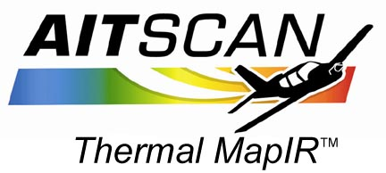

|
Thermal
MapIR Specifications
- Aerial IR survey will be
conducted at night at altitudes of 3000’ - 3500’ AGL.
- The imagery collected will be compiled into ortho-rectified geoTIFF
image (2ft. GRE)
- A DVD-ROM containing all project files will be provided.
Using the image data, we
will be able to point out leaks into creeks, areas of steam leaks and
thermal losses and the general condition of all roofs in the area flown.
You will then be able to qualify which roofs need work and which do not.
Then, we can go back to specific roofs and provide the base personnel with
6” GRE (Ground Resolution Element) imagery, drawings, etc. on just those
roofs or other areas of interest.
The mapping system consists of a thermal array fixed mounted into the
aircraft cabin. There is an IMU (inertial measurement unit) that records
all aircraft movement at 400 times per second. This provides the
“geographic-long-lat” orientation-solution trajectory for the imagery.
This Inertial Reference Gyro System is tightly-coupled to a real-time
Differential GPS Satellite positioning system that provides 0.6m x, y, z
positioning to the aircraft at all times. This also eliminates the need
for GPS ground stations to resolve final Imagery Geometry Solution.
Here's How It Works.
Here's How To Order. |